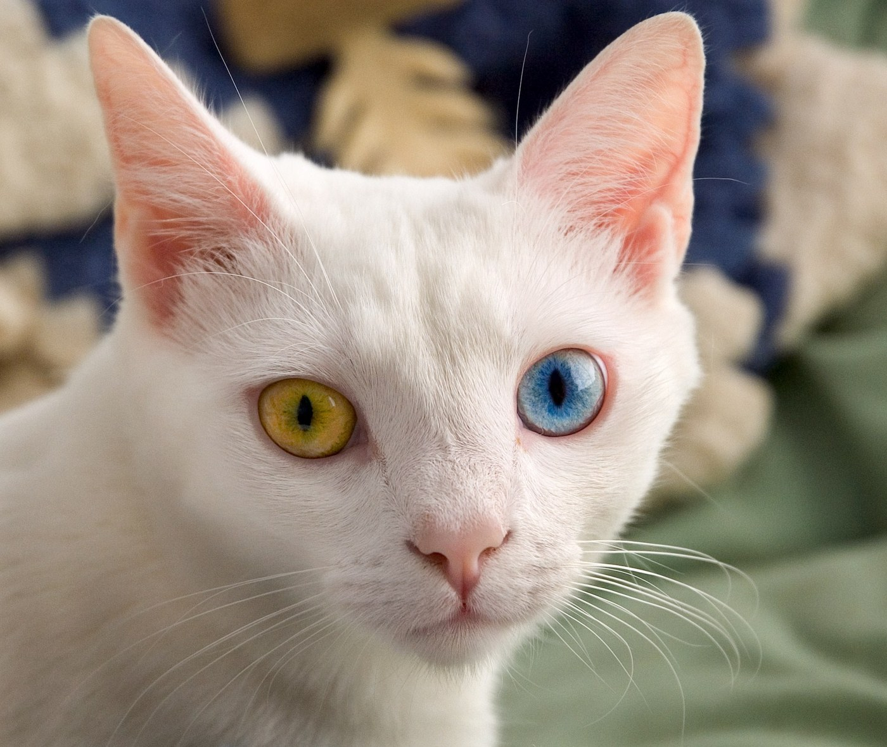

How do you check if it’s good data?

label:
dog
model:
cat
✓
✗
model looks wrong
ground-truth wrongness
Label Errors
Northcutt, Athalye and Mueller, Pervasive Label Errors in Test Sets (NeurIPS 2021)
·
labelerrors.com
· Photo: Keith Kissel, "June odd-eyed-cat" (cropped), CC BY 2.0, via Wikimedia Commons · the "dog" label is an example